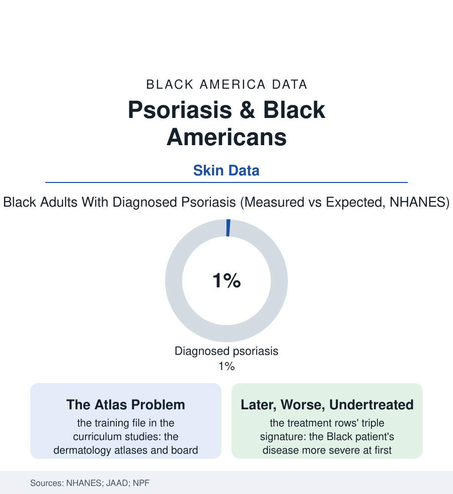

Black Public Health
The Unread Skin: Psoriasis on Black Skin
Psoriasis is diagnosed at half the expected rate in Black patients — not because the disease is half as present, but because the textbooks taught it in pink. The skin file's lesson in what a picture is worth.

Psoriasis announces itself in color: the classic plaque is salmon-pink with silvery scale — on the skin the textbooks photographed. On dark skin the same disease reads violet, grey-brown, its redness muted by melanin — and the diagnostic record shows the consequence: a disease measured in the blood-and-examination surveys well above its diagnosed rate in this population. This article reads the psoriasis file.
The Disease the Atlas Missed
The epidemiology is the file's careful starting point: the examination-based studies (NHANES's dermatology components and the clinic series) place Black psoriasis prevalence lower than the white rate but far above the diagnosed-and-treated rate the claims publish — the gap between the disease's presence and its paperwork the file's subject entire. Its mechanism is documented at the level of the medical image: the curriculum studies' counts of the teaching atlases and board-review materials (the classic dermatoses shown on dark skin in a small minority of images across the standard texts), the diagnostic-delay rows that follow (the Black patient's psoriasis charted first as eczema — the eczema file's diagnosis running the other way across the color line, the two diseases' files cross-referenced in the misdiagnosis literature with an almost literary symmetry — or as fungal, as dry skin, as the lichen of the biopsy finally taken years in), and the severity gradient the delay manufactures: the first specialist presentation's body-surface and quality-of-life scores running worse in the Black rows across the registry data, the disease's systemic freight (the psoriatic arthritis diagnosed latest of all — the joint file's damage accruing in the interval; the cardiovascular and metabolic associations the modern literature has established) compounding during the years the plaques were being moisturized. The workforce file completes the mechanism: dermatology among the least diverse specialties in the physician data, the skin-of-color clinics and curricula of the recent record the correction's beachhead — the specialty, to its credit, auditing its own atlas problem in its own journals.
The Biologic Era's Old Map
The mental-health rows are the file's last column and belong in it: the visible skin disease's quality-of-life instruments posting depression and social-withdrawal scores in the range of the serious chronic diseases — the teenager's long sleeves in August, the handshake withdrawn, the swimming file's empty lane — the burden quantified in the dermatology outcomes literature and borne, in the Black rows, with the fewest therapeutic resources spent against it. The skin is the interface. The file's whole subject is what it costs when the interface is misread.
The treatment era is genuinely golden, which sharpens the file: the biologic and targeted drugs of the last two decades clearing skin the older pharmacopeia managed at best — the registry data showing the clearance's power across skin types when the drugs arrive — and the claims data drawing the arrival's map in the section's familiar ink (the Black patient's biologic rate below the white patient's at matched severity in study after study, the prior-authorization gauntlet and the specialty-pharmacy choreography taxing exactly the slack this book's patients lack, the clinical trials of the miracle drugs enrolling Black participants in the low single digits — the evidence base itself palest where the undiagnosed are darkest). The tropical rows fill the lived middle: the topicals' cosmetic burden on dark skin (the white cast, the greased pillowcase — adherence's unglamorous determinants in the interview data), the scalp presentations in the hair file's jurisdiction (the plaques under the braids, the medicated shampoos against the wash-day calendar), the inverse and palmoplantar forms' work costs in the laboring rows. The correction's instruments are the specialty's own new furniture: the image libraries rebuilt across the spectrum (the open atlases of skin-of-color dermatology published precisely to close the training gap), the teledermatology triage whose photographs — read against the new atlases — reach the primary-care deserts, the biopsy threshold's explicit teaching (when the picture is unread, the tissue decides). The file closes with its moral, which generalizes across this section: a medicine that learns its diseases from pictures will miss them wherever the pictures don't match — and the fix is not a sentiment but a library, being built, image by image, in the open.
Reading the Psoriasis Data
The psoriasis file is the health section's lesson in looking: the disease was there, in another color, the whole time. NHANES publishes the examinations. The atlases — old and new editions side by side — publish the education, and the distance between them is measured in years of somebody's skin.
More in Black Public Health
Hypertension Among Black Adults: Prevalence, Control, and Consequences
About 55 percent of Black adults have hypertension — the highest rate of any U.S. group. Prevalence, onset, control, and the stroke, heart, and kidney consequences in the data.
Diabetes Among Black Adults: Prevalence and Complications
Nearly one in five Black adults has diabetes, diagnosed or undiagnosed — and its complications fall with particular weight. The CDC data on prevalence, control, and outcomes.
Black Life Expectancy: The Gap at Birth and Its Causes
Black life expectancy at birth is about 73 years, roughly five years below the national figure — the summary measure of every health gap in this section. The CDC data.
Source: National Health and Nutrition Examination Survey dermatology data; Journal of the American Academy of Dermatology research; National Psoriasis Foundation studies; dermatology workforce data.